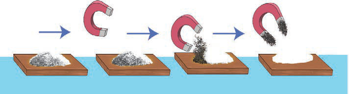

- 1. Put the soil on the cardboard.
- 2. Put the iron filings on the cardboard.
- 3. Mix the soil with the iron filings.
-
4. Pass the magnet above the mixture of the soil and the iron filings.What do you see?
-
5. Continue spreading the soil and iron filings mixture using a bar magnet.What do you observe?
Results: Write the results of the experiment you have done.
Conclusion: Write the conclusion of the experiment you have done.
Magnets are used to separate iron related materials from non-iron-related materials. This procedure is used in food industries to separate iron-related particles from food products. See Figure 13. This ensures safety and prevents food contamination.

Magnets are also used in various electronic and technological devices. Examples include refrigerators, radios, phones, computers, generators, automated teller machine (ATM) cards, voice recorders and microphones.
Storing magnets
Activity 8: Search for information on the proper ways of storing magnets
Search for information about how to store magnets from the library or reliable online sources. Write down your findings.
Magnets become weak if they are not stored properly.
If you want magnets to maintain their magnetic strength, the following must be observed: